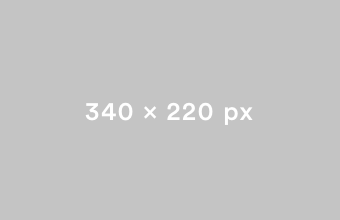

Photo grise, c'est cool
Photo grise, c'est cool
Photo grise, c'est cool

CECI EST UN GROS TITRE

La couleur est la perception visuelle de la répartition spectrale de la lumière visible. Cette sensation prend son origine dans la stimulation de cellules nerveuses spécialisées nommées cônes et situées sur la rétine. La couleur peut se décrire dans une approche artistique, qui recherche des indications capables de guider les praticiens dans leur perception de la couleur et de l'emploi des pigments pour reproduire ou évoquer la sensation de couleur qui relie la perception au système visuel.